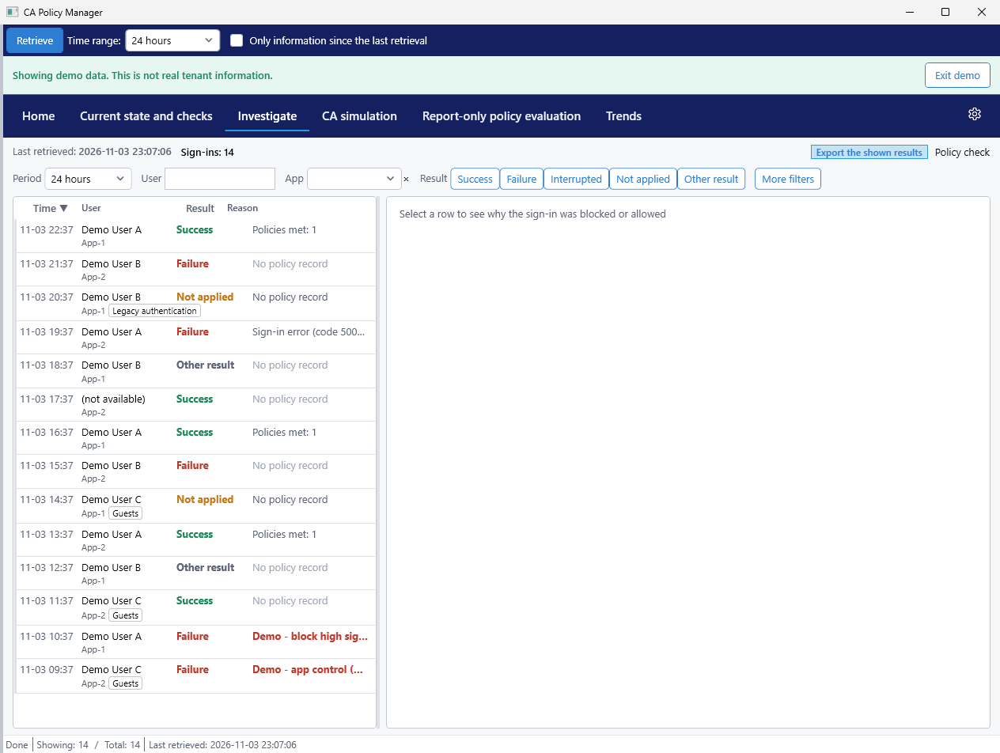
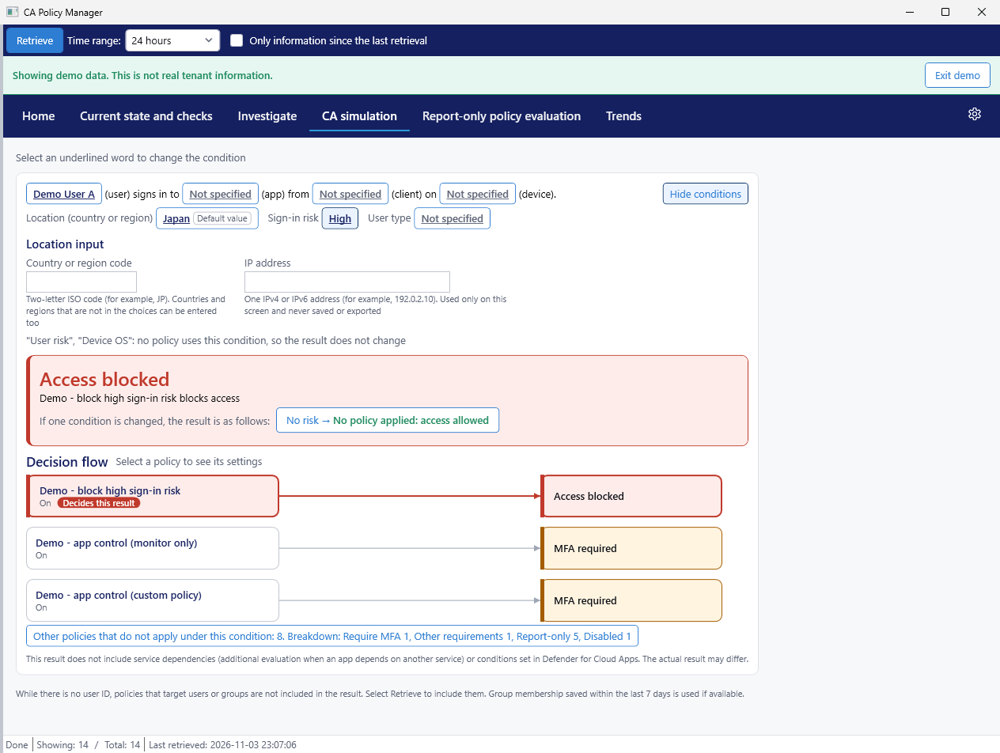
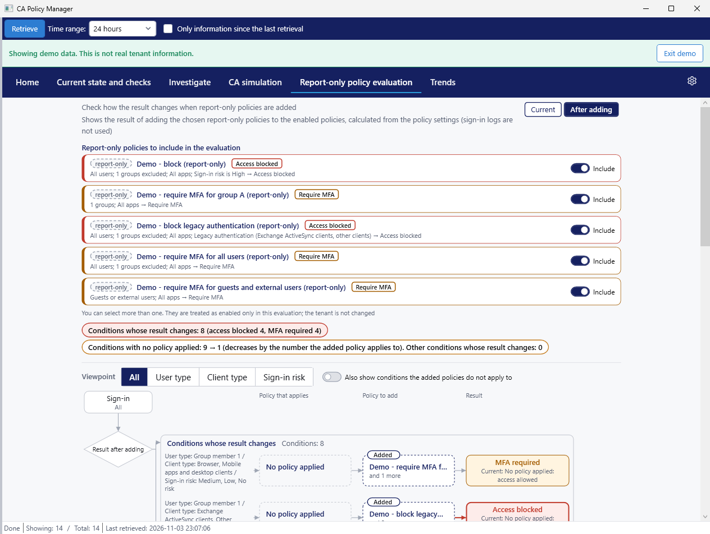
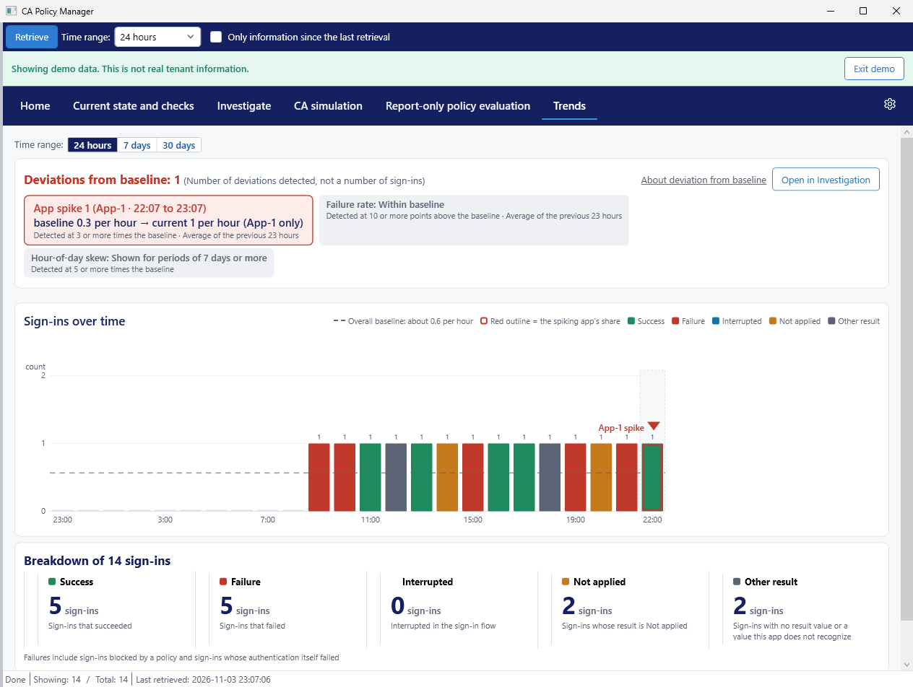
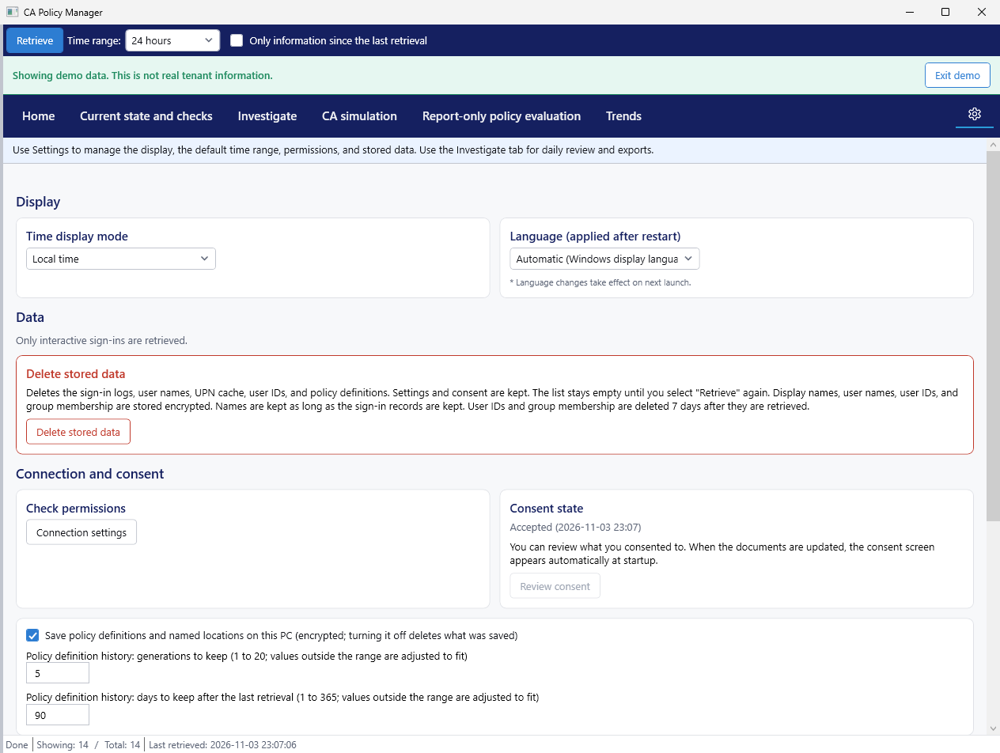

Main screens
All images use synthetic demo data
Home
Start here. Home shows the data retrieval status, today's status, and the sign-in search. The three numbers in today's status are:
- Needs action: the number of recommended policy items that are not met
- Conditions with no policy applied: the number of conditions counted from the policy settings, not a log count
- Deviation from baseline: the number of deviations detected by comparison with the baseline, not a sign-in count
The sign-in search shows the count for each result and for viewpoints such as sign-ins with no policy record. Select one to open the Investigate tab.
If there are old-format entries that do not record the applied policies, the data retrieval status shows Old-format entries: N. These entries are not included in the viewpoint counts.

Current state and checks
Compare your policies with the recommendations here. Select a category, and the app checks whether your current policies meet the recommended policies. You can switch between Current settings and If the recommendation is applied. For policies with settings that Microsoft Graph cannot return, the app directs you to the admin center.

Investigate
Use this screen to look into individual sign-ins. Filter the list by period, user, app, and result. Select a row to see why the sign-in was blocked or allowed. A sign-in with no result value is shown as No result recorded, and a sign-in with a value the app does not recognize is shown as Other result. The policy check shows the policy configuration. In the paid edition, you can export the listed sign-ins to CSV and HTML.

CA simulationPaid edition
Check a result without waiting for a real sign-in. Specify conditions such as user, app, client, device, location, and risk to see the result (such as Access blocked, MFA required, or No policy applied: access allowed) and the evaluation flow. An IP address you enter is used only on this screen and is never saved or exported. The result is not an official Microsoft evaluation.

Report-only policy evaluationPaid edition
See how results change before you turn a report-only policy on. This screen calculates the result of adding the selected report-only policies to the existing enabled policies. It uses the policy settings, not the sign-in logs. You can switch between Current and After adding. It also shows how many fewer conditions would have no policy applied. Tenant settings are not changed.

Trends
Select a time range to see the change in sign-in counts and the breakdown (success, failure, interrupted, not applied, and other result). Other result means no result value or a value the app does not recognize. The app compares sudden increases for an app, the failure rate, and time-of-day patterns with the baseline.

Settings
This screen covers the time display, language, user display (name, user name, or anonymous), connection settings, emergency access accounts, and deleting stored data. A language change takes effect the next time the app starts.

Last updated: 2026-11-04